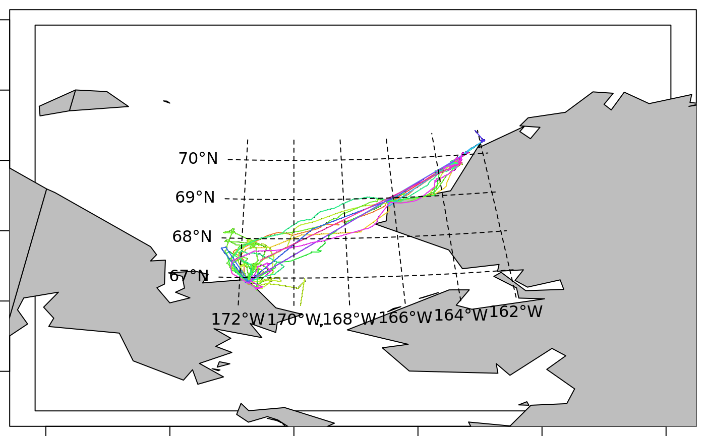

Introduction
Basic use of the trip package.
Data input and validation
## Loading required package: spd <- data.frame(x=1:10,y=rnorm(10), tms=Sys.time() + 1:10, id=gl(2, 5))
coordinates(d) <- ~x+y
## a projection should always be set, is it WGS84 or NAD83 . . .
proj4string(d) <- CRS("+proj=laea +ellps=sphere")
tr <- trip(d, c("tms", "id"))
summary(tr)##
## Object of class trip
## tripID ("id") No.Records startTime ("tms") endTime ("tms")
## 1 1 5 2019-04-04 02:19:03 2019-04-04 02:19:07
## 2 2 5 2019-04-04 02:19:08 2019-04-04 02:19:12
## tripDuration tripDistance meanSpeed maxSpeed
## 1 4 secs 6.846303 6161.673 9697.668
## 2 4 secs 5.599667 5039.700 7421.218
##
## Total trip duration: 8 seconds (0 hours, 8 seconds)
##
## Derived from Spatial data:
##
## Object of class SpatialPointsDataFrame
## Coordinates:
## min max
## x 1.000000 10.000000
## y -1.316976 1.519885
## Is projected: TRUE
## proj4string : [+proj=laea +ellps=sphere]
## Number of points: 10
## Data attributes:
## tms id
## Min. :2019-04-04 02:19:03 1:5
## 1st Qu.:2019-04-04 02:19:05 2:5
## Median :2019-04-04 02:19:07
## Mean :2019-04-04 02:19:07
## 3rd Qu.:2019-04-04 02:19:09
## Max. :2019-04-04 02:19:12
Gridding for time spent

Plot of a rasterized version of the trip, by default this is a map of time-spent.
Walrus tracks
Plot the walrus tracks on a map.

## Checking rgeos availability: TRUE## rgdal: version: 1.4-3, (SVN revision 828)
## Geospatial Data Abstraction Library extensions to R successfully loaded
## Loaded GDAL runtime: GDAL 2.4.0, released 2018/12/14
## Path to GDAL shared files: /usr/share/gdal
## GDAL binary built with GEOS: TRUE
## Loaded PROJ.4 runtime: Rel. 5.2.0, September 15th, 2018, [PJ_VERSION: 520]
## Path to PROJ.4 shared files: (autodetected)
## Linking to sp version: 1.3-1data(wrld_simpl)
world <- spTransform(subset(wrld_simpl, coordinates(wrld_simpl)[,2] > 0), proj4string(walrus818))
p <- par(xpd = NA, mar = rep(0.5, 4))
plot(walrus818, pch = ".")
plot(world, add = TRUE, col = "grey")
lines(walrus818)
llgridlines(walrus818); par(p)
Combine multiple sets of track data
## Loading required package: stats4## This is diveMove 1.4.5. For overview type vignette("diveMove")fname <- system.file(file.path("data", "sealLocs.csv"),
package="diveMove")
dat <- read.table(fname, sep=";", header = TRUE, stringsAsFactors = FALSE)
dat$class <- ordered(dat$class, c("Z", "B", "A", "0", "1", "2", "3"))
dat$time <- as.POSIXct(strptime(dat$time, "%Y-%m-%d %H:%M:%S"), tz = "GMT")
locs <- subset(dat, !is.na(dat$lon))
trip(locs) <- c("lon", "lat", "time", "id")## Warning in assume_if_longlat(out): input looks like longitude/latitude
## data, assuming +proj=longlat +datum=WGS84proj4string(locs) <- " +proj=longlat +ellps=WGS84 +datum=WGS84 +no_defs +towgs84=0,0,0"
## merge with data from argosfilter
library(argosfilter)
data(seal)
seal$id <- "ringy2"
seal[["time"]] <- seal$dtime
seal$dtime <- NULL
## reconstruct the Argos labels
seal[["class"]] <- ordered(levels(dat$class)[factor(seal$lc, sort(unique(seal$lc)))], levels(dat$class))
seal$lc <- NULL
## what are we supposed to do with duplicated times?
## which(!diff(seal$time) > 0)
##[1] 17 116 122 1008 1158 1231 1293 1300
##plot(seal[which(!diff(seal$time) > 0),c("lon", "lat") ])
##points(seal[1 + which(!diff(seal$time) > 0),c("lon", "lat") ], col = "red")
seal <- seal[!duplicated(seal$time), ]
## drop missing data and combine
dat <- rbind(dat[!is.na(dat$lon), ], seal[,names(dat)])
##coordinates(dat) <- c("lon", "lat")
##proj4string(dat) <- CRS("+proj=longlat +ellps=WGS84 +datum=WGS84 +no_defs +towgs84=0,0,0")
tr <- dat
trip(dat) <- c("lon", "lat", "time", "id")## Warning in force_internal(obj, TORnames): ordering input records by trip
## ID, then time
## Warning in force_internal(obj, TORnames): input looks like longitude/
## latitude data, assuming +proj=longlat +datum=WGS84proj4string(dat) <- CRS("+proj=longlat +ellps=WGS84 +datum=WGS84 +no_defs +towgs84=0,0,0")
library(raster)##
## Attaching package: 'raster'## The following object is masked from 'package:argosfilter':
##
## distanced2 <- spTransform(dat, projection(walrus818))
plot(union(extent(d2), extent(walrus818)))
lines(d2)
lines(walrus818)
plot(spTransform(subset(wrld_simpl, coordinates(wrld_simpl)[,2] > 0), projection(walrus818)), add = T, col = "grey")